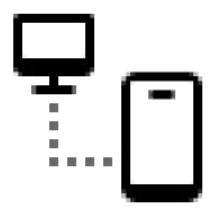
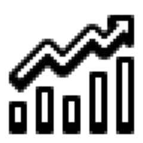

Cloud Computing
An information security and user access management system that utilizes Security Information and Event Management (SIEM)
and Electroencephalogram (EEG) based data analysis for threat detection and security
adaptation based on cognitive responses.

Internet of Things
The application of IoT, sensors, data analysis, computer vision,
and artificial intelligence to optimize agricultural processes with efficient use of resources, real-time monitoring, and data analysis to increase crop yields.

Green Computation
The application of blockchain and data analytics to increase transaction transparency and security, as well as using data
analytics to predict market movements and optimize trading strategies based on historical trends and patterns.

Integrated Technology Project
The application of IoT, cloud computing, and data analytics integrates various medical devices for real-time
monitoring, data storage on the cloud, and the use of data analytics to improve diagnosis, treatment, and health policy development.

Decision Support System
The application of automated assistance, autograding, software testing, gamification, simulation,
and learning methodology to help students learn ICT and computer programming interactively and effectively with instant feedback and game elements.

Computational Statistics
Implementation of a decentralized architecture to improve security, reliability, and collaboration between various entities,
enabling rapid information sharing, more efficient decision-making, and risk mitigation in military operations.

Software Programming and Development
The application of automated assistance, autograding, software testing, gamification, simulation, and learning methodology to
help students learn ICT and computer programming interactively and effectively with instant feedback and game elements.

Platform Technology
The application of blockchain and data analytics to increase transaction transparency and security,
as well as using data analytics to predict market movements and optimize trading strategies based on historical trends and patterns.